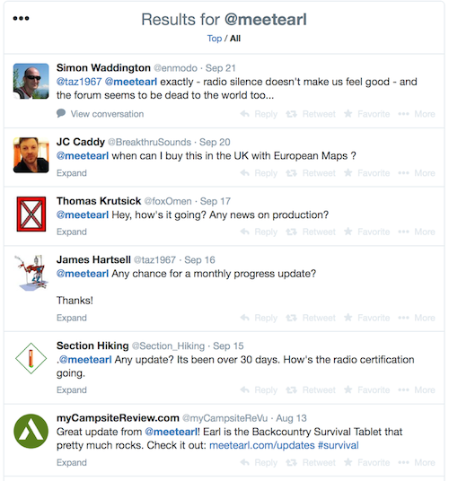
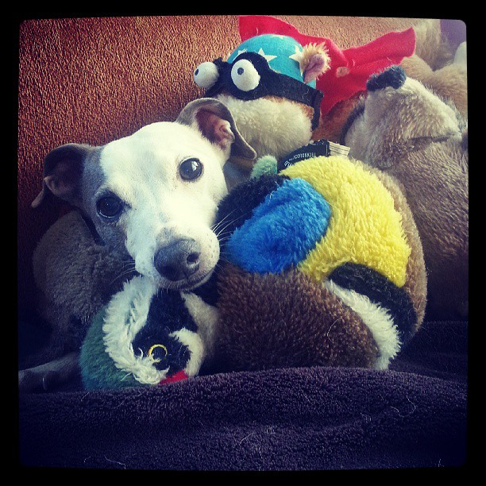

Is Earl--Sqigle's crowdfunded tablet project--legitimate? Probably.
Full disclosure: I was an early backer of Earl. Like several other (of their 2,200+) backers, I have followed the story of Earl through their forums, sparse Twitter updates, and even sparser website updates. Like a small minority of those followers, I had in recent months also started to worry that this whole campaign was never going to be realized — or worse, that it was a straight scam. I finally reached the limit of my own patience, and emailed Sqigle’s CEO–Jon Perry–to get the scoop, and he took the time to (politely) respond to my (unexpectedly antagonistic, in retrospect) email. Here’s what I found out.
Last year, at the beginning of May, Jonathan Perry was fortunate to realize the beginning of a journey. He wouldn’t have done it without the backers of his crowdfunded project, Earl (named after his dog), the waterproof, solar-powered outdoor-activity-inspired tablet with ham radio and GMRS/FRS support, free topo maps… I’m sure I’m leaving out something… It’s a fairly ambitious product that sounded like a hiker’s dream. Nothing like it exists on the market today. (Especially at a $299 price point for preorders.) Like all crowdfunded projects, however, there are risks, and Earl isn’t in backers’ hands yet — this Wednesday will be the 16-month-mark of Earl’s campaign reaching its $250,000 goal. Jonathan’s team is still pushing forward with their ambitious product, and looking towards the future they hope their hardware startup will have in post-production.
Crowdfunding is Risky Business
It’s not unexpected for a crowdfunding project to take longer than expected, or to fail entirely. CNN Money posted a chart1 of the 50 top-funded Kickstarter projects through November 2012. Of those 50, only 8 (16%) shipped on-time, leaving 84% of projects delayed. Fox News suggests2 the delay rate may be as high as 75%.
Some, like the Oculus Rift hadn’t even shipped as of the time of their writing, but since have. In Oculus Rift’s case, Facebook later acquired them for $2bn in mid-2014, less than two years after their wildly successful (but heavily delayed) crowdfunding campaign.
But just because some make it doesn’t mean that all do. Neal Stephenson’s crowdfunded swordplay game recently posted their final update, throwing in the towel on 9,023 backers’ $526,125 two years after they were funded and the money has been all spent on what amounts to a game that “wasn’t very fun to play.”
These risks haven’t stop backers from funding projects, though. According to a Massolution report published on Crowdsourcing.org, $2.7bn was crowdfunded in 2012, and that number was expected to grow to $5.1bn in 2013. And the World Bank expects crowdfunding to grow to $93bn by 2025.3
Earl’s Red Flags
But why has Earl received criticism, and is it warranted? Some of these complaints are genuine and warranted, but others turn out to be falsehoods spawned from a vacuum of backer communication. From reading the forums and following updates on Twitter, complainants fall into three main categories:
- Earl’s release date keeps getting pushed back
- Earl’s team isn’t providing updates frequently enough
- This whole Earl thing feels like a scam
Here’s what I found out by talking to Jon.
Release Slip
As mentioned above, crowdfunding projects have up to an 84% chance of slipping deadlines. Earl is no exception.
Earl’s flaw, in this case, comes from Jon’s initial inexperience with the process. He shared the campaign’s inception with me: “The original idea when I started prototyping some ereaders together at my house was to run a Kickstarter.” Jon shared with me that they chose not to go with a platform like Kickstarter or Indiegogo because they wanted more creative control of the page layout. Further, at the time all they had was a prototype and some renderings, “Since I didn’t have a fully functional prototype in hand I didn’t think a video would do Earl justice.” (The renderings would have violated Kickstarter’s policies.) Kickstarter and Indiegogo would also take a cut of the funds, making Jon’s job even more challenging.
“I built the site and posted it to my Facebook and within a few days people started preordering Earl. I actually rushed to get some press stuff together, but the internet had organically taken our campaign and ran us around the world a few times.” And then, of course, reality caught up with him. “It’s taken a whole heck of a lot longer than I ever expected.” So what caused the delays? Jon realized he needed outside help to build twice as many Earls as he planned, “Taking on a project of this magnitude without prior experience required the help of a few contracted firms.”
But Jon was living in the Seattle area, and the Shenzhen manufacturers were half a world away. “Anyone that has had issues manufacturing abroad can relate to some of the setbacks we’ve encountered. Most of the problems could have been resolved much sooner, unfortunately these teams require more hands on from our team to keep things going forward.”, he explains, “700k is not very much to go by, but we’re making it work. Unfortunately it doesn’t leave room for a local team right now.”
Since those delays, backer updates show that development is back on track (although they routinely experience minor setbacks from their vendors), and Earl has (another) timeline up. The device is currently moving towards certification from the FCC and their Canadian, European, and Oceania counterparts. Software engineering is in full swing, too; from the latest update: “I took the opportunity to fly out to Delhi to meet with our software development team. They’ve been working hard to get all the features we need integrated.”
Crowdfunding Updates
In these situations, there seems to be a direct correlation between frequency of backer updates and campaign success (and, I would personally argue, backer satisfaction). Seriously, people study these things these days. But in Earl’s case, early communication slipped way to the occasional monthly update, and backer annoyance became a common thread of Twitter updates, as backers began probing the company to post updates.
Meet Earl on Dipity - The above timeline shows Earl’s email updates and updates posted to their website, which have grown further and further apart over time. Email updates have ceased entirely.
Earl’s updates were slower than some folks wanted, even from the beginning, and Earl acknowledged that by apologizing time and time again. With each update came additional promises, and often, those promises included increased frequency of updates. However, time and time again those more frequent updates never materialized. “This time last year I was certain I would have the retail version in my hand by summer,” Jon told me in his email, “Though I may not be the most punctual when it comes to communication, it’s challenging trying to juggle so many things at once.”
Jon’s Twitter followers are hard to appease, and routinely remind Jon that updates are due on his website when more than 30 days have elapsed… or sometimes sooner. Posters on his forums are even more challenging, though, with many scathing posts faced down by a calm Sqiqle CEO and his backer/supporters. It seems his backers are accustomed to a certain level of service, and don’t feel like they’re getting it. 
Who is Sqigle, Earl, and Jon Perry?
Since beginning the execution phase of the campaign, Jon has has been a nomad.
Officially at this time, we do not have an office. I run virtually as I’ve been living in Hong Kong most of the past year and when I’m in the states, I’m in either LA, SLC, SF or Seattle. None of which I have an apartment.
I took the liberty of digging deeper into the company building Earl–Sqigle–as well as its founder, Jon Perry. Jon was a little taken aback by the details I uncovered. (Most of which I won’t share here, out of concerns for the privacy of his friends and family, as well as some confidentiality concerns with his manufacturing partners.) But by his own account, “I accepted this public position when we ran our campaign. I’m just not used to people “googling” me yet, not mad, just feels weird.” Despite his apprehension, he addressed each of my concerns, probably from one of his many living room offices.
“LA is home to one of my old friends that helps with the business side, researching the market and helping write a pitch for VC investments. Salt Lake City, where I resided for a few years, is where the dog Earl has been living while I’m away, with an old friend.” In San Francisco, there’s another friend/business partner: “He’s one of the people that helped me handle things during the campaign and [he’ll be helping with] marketing and support in the next coming months.”
It’s no secret that Jon’s manufacturing partner is in Shenzhen, Hong Kong, China, one of the fastest growing cities in the world and home to a sizable manufacturing district4. His software engineering partner is based out of Delhi, India. I did some web sleuthing after Jon shared some details on their manufacturing side with me. Although he can’t publicly share the name of the partners he’s doing business with, I can assure you that they exist, and that these people are not robots, college students, or CGI-rendered people:
Jon Perry and his Chinese manufacturing experts (who are not CGI-rendered)
In the end, Jon addressed the critical eye I afforded him politely and openly, including the private aspects of his life I had no business asking about to verify his identity. Even the previous business ventures of his that I unearthed were explained rationally. Jon’s got an entrepreneurial spirit, and the attitude to push through problems in his businesses. He used to sell HCG dietary supplements, did a brisk business in buying iPhones here in the US and reselling them overseas (before Apple set a 2-phone limit), and resold used sporting goods, before he started tinkering with ereaders and solar panels.
And when I probed him on how he’s spending his time, and his background, we get another window into the infrequent updates: “I’ve been spending most of my free time prepping for a VC round this coming November in Dublin where we’ve been asked to attend the Web Summit. I’m sure investors will be asking similar questions. While I can see how this campaign could look fraudulent, it probably wouldn’t be so smart to stick around.” In the age of the internet, it’s possible to verify anybody’s electronic persona against their offline identity, and Jon’s no exception.
Summary – Or, Earl’s Probably Legit After All
Sqigle is a real company, registered in Washington State, and the details about Jon and his startup I uncovered leave me with no other impression than that Earl is in development and nearing production, and that Jon has every intention to bring it not only to his backers’ hands, but also into retail stores. My personal impression is that Jon’s a busy guy trying to juggle a startup with the support of a close handful of co-founders and a few overseas contract engineering companies. He committed to a project without knowing the full extent to which his life would be consumed by Earl. He’s built a manufacturing, software engineering, and marketing company around himself with the scrappy cash his backers provided him. He’s flown himself to China and all over the US to try to make sure this project is a success, and put his life on hold to realize the dream he kicked off in the summer of 2013.
As Jon told me, “We’re only here because backers like you helped us get a start.” Which is the exact same story other crowdfunding projects have repeated – those that have succeeded, those that haven’t, and those that haven’t – yet. I’m still hopeful with this one. But if you aren’t, Jon is prepared for that too: “I stick by our refund policy, if at anytime you want out, let us know.”
Time will tell if Jon’s team starts updating more frequently, and whether the campaign bears fruit, but Jon has something to look forward to at the end of this adventure (and hopefully, the beginning of his next):
Everyone here is working extremely hard so that we can deliver the best version of Earl to each of you and so Jon can get back home to play with the real Earl.
